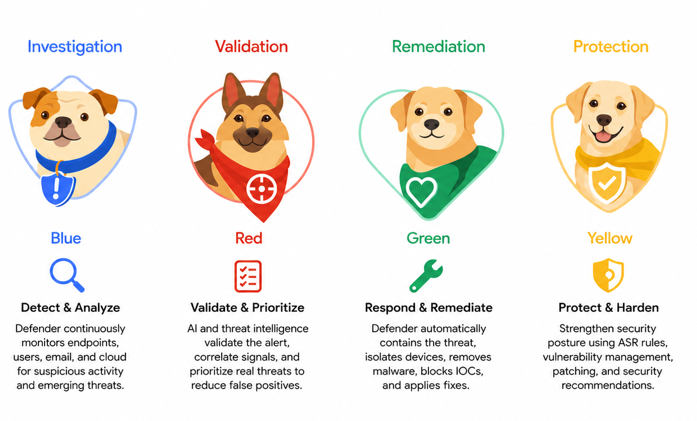
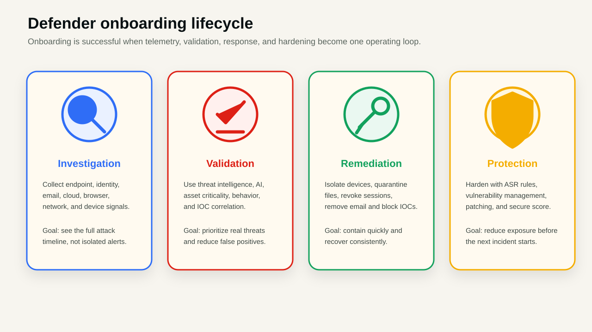
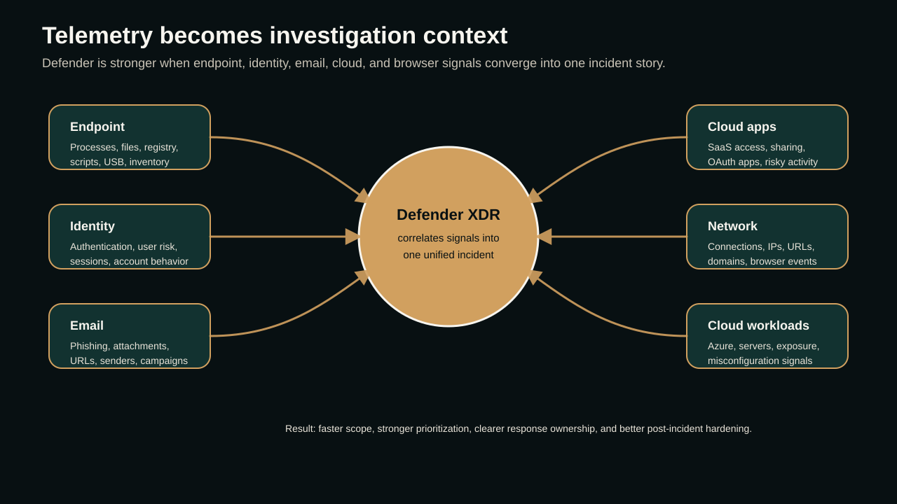
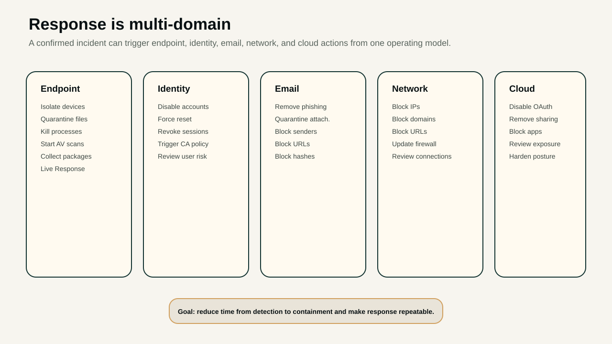
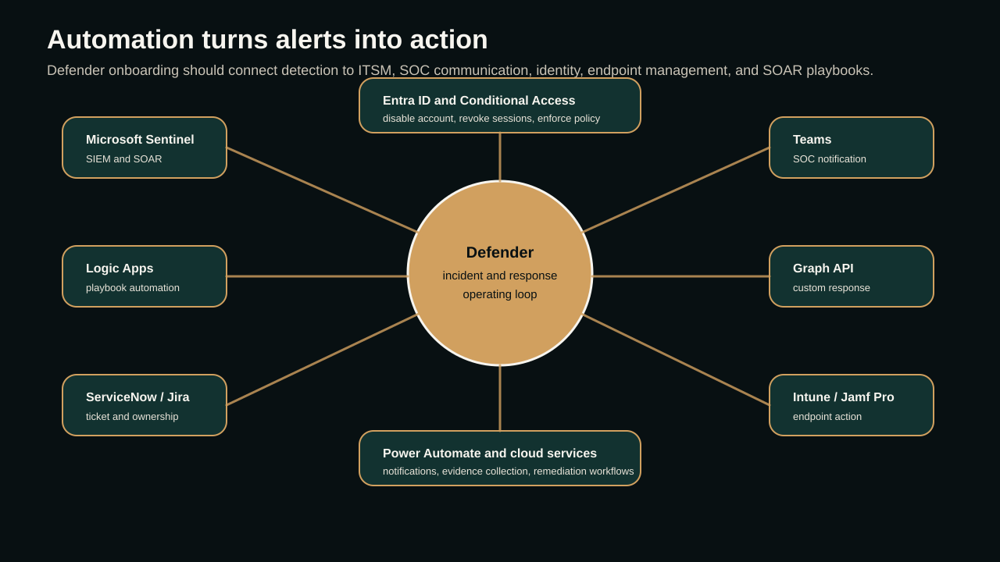

01 · Why Defender
Modern security needs more than antivirus
Organizations now defend against ransomware, phishing, identity theft, zero-day vulnerabilities, insider threats, cloud attacks, and coordinated campaigns that change every day. Traditional antivirus can still be useful, but it is no longer enough by itself.
The Defender evaluation should therefore ask a wider question: can the platform provide end-to-end visibility, correlate signals, automate investigation, reduce manual effort, and continuously improve protection across endpoints, identities, email, cloud applications, and hybrid infrastructure?
A simple way to explain the onboarding model is the four-color lifecycle: blue for investigation, red for validation, green for remediation, and yellow for protection. The concept image below captures that story in a friendly way before we translate it into enterprise operating steps.


02 · Platform scope
Defender works best as an integrated ecosystem
Modern enterprises run across Windows, macOS, Linux, mobile devices, Microsoft 365, Azure, SaaS applications, and cloud infrastructure. Defender becomes stronger when these signals are connected instead of managed as disconnected point tools.
- Microsoft Defender for Endpoint for endpoint detection, response, device inventory, and attack surface controls.
- Microsoft Defender XDR to correlate endpoint, identity, email, and cloud alerts into unified incidents.
- Defender for Office 365 for phishing, malicious attachments, unsafe URLs, and email response actions.
- Defender for Identity and Defender for Cloud Apps for identity risk and SaaS activity visibility.
- Defender Vulnerability Management and Defender for Cloud to reduce exposure across devices and cloud workloads.
- Microsoft Sentinel integration for SIEM, SOAR, automation, hunting, and incident orchestration.
This ecosystem matters because attackers do not stay in one control plane. A phishing email can become credential theft, a risky sign-in, lateral movement, cloud app abuse, endpoint persistence, and data exposure. Defender onboarding is strongest when these signals are connected before the first serious incident.
03 · Investigation
Detect and analyze the full activity story
Investigation starts with telemetry. Defender collects signals from process execution, registry changes, files, network connections, PowerShell and script activity, USB usage, browser events, installed applications, device inventory, user authentication, email, and cloud application access.
The value is not simply collecting more logs. The value is reconstructing the attack timeline so analysts can see what happened before the alert, what the user did, which device was affected, whether identity activity changed, and whether the attack touched email or cloud services.

- Endpoint telemetryProcess execution, file creation and deletion, registry changes, PowerShell and script activity, USB activity, installed apps, and device inventory.
- Identity telemetryUser authentication, risky sign-ins, session activity, account behavior, privilege use, and identity-related events.
- Email telemetrySender reputation, phishing attempts, malicious attachments, unsafe URLs, mailbox activity, and campaign patterns.
- Cloud and browser telemetryCloud application access, OAuth app activity, browser events, network connections, IPs, URLs, and domain activity.
04 · Validation
Prioritize real threats and reduce false positives
Not every suspicious event is a real incident. Defender validates activity using Microsoft threat intelligence, AI, machine learning, behavioral analytics, historical patterns, MITRE ATT&CK mapping, known indicators of compromise, device reputation, user risk, asset criticality, and exposure score.
This is where Defender XDR becomes useful operationally. Instead of creating separate alerts across endpoint, identity, email, and cloud tools, it can correlate signals into an incident so security teams understand scope and priority faster.
- Device reputation and exposure score help decide whether an alert matters more on one asset than another.
- User risk and behavior analytics help separate normal activity from suspicious identity movement.
- Threat intelligence, cloud intelligence, and known IOCs help validate whether activity matches active campaigns.
- Historical activity and MITRE ATT&CK mapping help analysts understand technique, sequence, and likely intent.
05 · Remediation
Contain quickly and recover consistently
Once a threat is confirmed, response must be fast. Defender can support automated or analyst-driven containment across endpoints, identities, email, network controls, and cloud applications.
Typical Defender response actions
Isolate compromised endpoints
Quarantine malicious files and kill malicious processes
Start antivirus scans and collect investigation packages
Disable compromised accounts and revoke active sessions
Trigger Conditional Access policies
Remove phishing emails and malicious attachments
Block senders, URLs, domains, IP addresses, and hashes
Disable malicious OAuth applications and risky sharing links
06 · Protection
Harden before the next incident starts
The best Defender strategy is not waiting for the next alert. Protection means reducing the paths attackers commonly use: malware execution, credential theft, Office macro abuse, malicious child processes, vulnerable software, risky browser behavior, unmanaged USB use, and weak endpoint posture.
- Next-generation antivirus, EDR, and XDR for layered detection and response.
- Attack Surface Reduction rules to block common exploitation techniques.
- Device Control, USB protection, web protection, network protection, SmartScreen, and firewall management.
- Tamper Protection, Credential Guard, Exploit Protection, application control, and BitLocker recommendations.
- Secure Score and Exposure Score to measure posture and prioritize hardening.
The protection layer should also cover malware, trojans, worms, rootkits, fileless attacks, ransomware, zero-day behavior, malicious executable launches, Office macro abuse, Office child processes, WMI abuse, PSExec misuse, and credential theft attempts. This is how Defender moves from reactive response into preventive posture improvement.
07 · Vulnerability management
Reduce exposure before attackers use it
Defender Vulnerability Management helps identify missing operating system patches, vulnerable software, unsupported operating systems, browser vulnerabilities, security misconfigurations, and high-risk applications. The important part is prioritization: teams should fix what is exploitable and business-critical first.
This turns vulnerability management into an operational workflow rather than a static report. Security, EUC, application owners, and infrastructure teams can align remediation around risk, exposure, and business impact.
- Prioritize exposed internet-facing devices and high-value assets before lower-risk endpoints.
- Separate operating system patching, browser patching, application patching, and configuration hardening into owned work queues.
- Use Secure Score and Exposure Score trends to show whether the environment is getting safer over time.
- Track unsupported operating systems and high-risk applications as migration or removal work, not just security findings.
08 · AIR and hunting
Automate investigation, then hunt beyond alerts
Automated Investigation and Response helps collect forensic evidence, analyze processes, inspect registry changes, review files, analyze network connections, identify persistence, determine root cause, and recommend or execute remediation. That improves consistency and reduces the amount of manual triage required for every alert.
Advanced Hunting adds the proactive layer. Analysts can use KQL to hunt for suspicious PowerShell, credential theft, lateral movement, registry persistence, browser attacks, USB activity, file modifications, email events, and network activity before those patterns become major incidents.
High-value hunting themes
Suspicious or encoded PowerShell execution
Credential theft and unusual authentication patterns
Lateral movement and remote execution attempts
Registry persistence and unauthorized software installation
Sensitive file access and mass file modification
USB activity on high-risk devices
Browser abuse, malicious URLs, and cloud app anomalies09 · Custom detection
Tune Defender to the business, not only the defaults
Every environment has its own risk patterns. Custom detection rules let teams create KQL-based detections for encoded PowerShell, unauthorized remote access tools, privilege escalation, excessive failed logins, suspicious USB use, sensitive file access, Tor connections, cryptocurrency mining, mass file encryption, registry persistence, and unauthorized software installation.
Operator note
Good custom detection should have an owner, a response action, a false-positive review path, and a retirement plan when the risk changes.
10 · Automation and integrations
Response improves when Defender connects to the operating model
Defender can integrate with Microsoft Sentinel, Logic Apps, Power Automate, ServiceNow, Jira, Microsoft Teams, Graph API, Intune, Jamf Pro, Entra ID, Microsoft 365, Azure, Defender for Cloud, and Defender for Cloud Apps.
These integrations make onboarding more valuable because alerts can become action: create incidents, notify SOC teams, isolate devices, collect evidence, disable accounts, revoke sessions, block malicious infrastructure, launch remediation scripts, and trigger custom playbooks.

11 · Global intelligence
Defender improves as Microsoft sees new threats globally
Microsoft continuously analyzes security signals across Windows, Microsoft 365, Azure, Defender, Edge, cloud services, and enterprise environments. When new ransomware, phishing, zero-day, or nation-state activity appears, Microsoft can distribute updated behavioral detections, IOCs, signatures, URL blocks, IP blocks, domain blocks, and rules through the cloud.
That makes Defender more than a local endpoint agent. It becomes part of a global threat response system that helps organizations adapt as new attack patterns emerge.
12 · Onboarding checklist
Make onboarding measurable from day one
- Confirm device onboarding coverage across Windows, macOS, Linux, and mobile scope.
- Define alert ownership, severity routing, escalation paths, and response SLAs.
- Enable baseline policies for AV, EDR, tamper protection, ASR, web protection, and network protection.
- Connect identity, email, cloud apps, vulnerability management, and SIEM/SOAR workflows.
- Define custom detections, Advanced Hunting queries, and automation playbooks for high-risk scenarios.
- Track Secure Score, Exposure Score, unresolved incidents, vulnerable software, and response time trends.